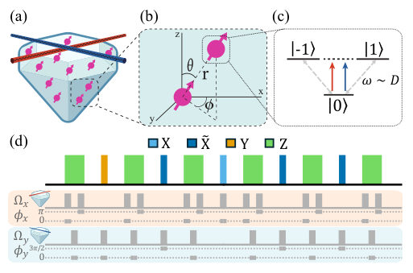
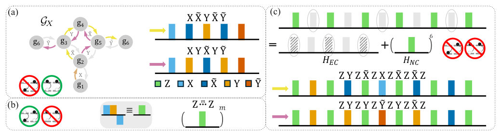
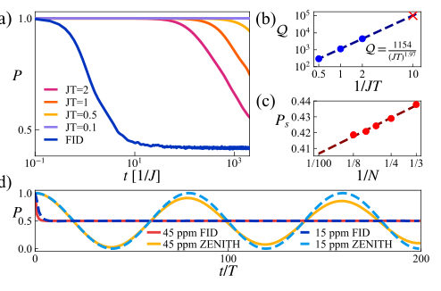

← Index · ← Previous · Next →
Authors: Zhen Qin, Michael B. Wakin, Zhihui Zhu
Type: theory · Category: quantum information and computing · PDF: https://arxiv.org/pdf/2605.27191v1
Analysis basis: full PDF text, analyzed in chunks
Topic relevance: 🔥 quantum measurements 4/5 · entanglement & information structure 3/5 · analog quantum simulation 2/5 · measurement-induced transitions 2/5 · methods for driven-dissipative 2/5
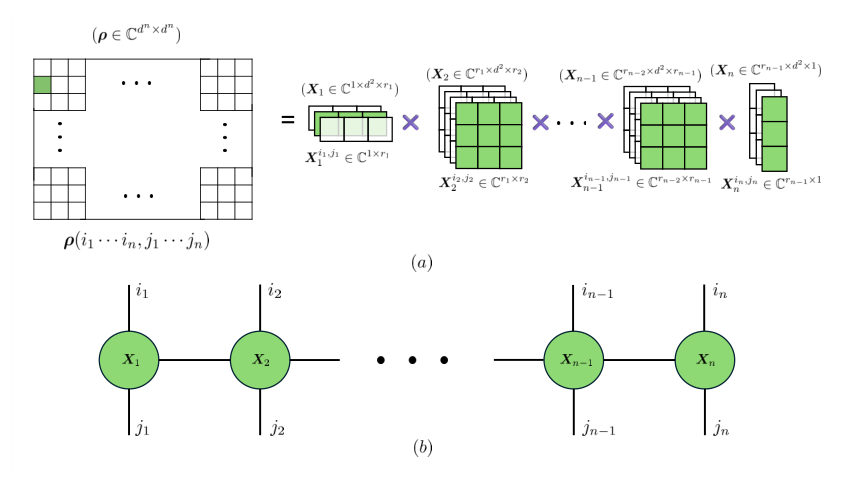
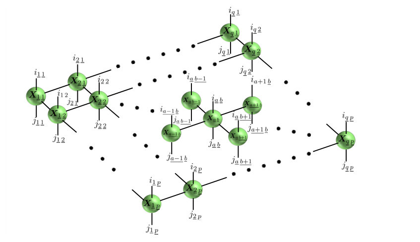
Summary. This review provides a unified perspective on performing quantum state tomography on large-scale systems by exploiting structural priors. It connects the theory of measurement design and optimization algorithms to the field of compressed sensing, showing how to reduce the complexity of state reconstruction from exponential to polynomial scaling.
Why it may be interesting. It provides a comprehensive theoretical bridge between signal processing (compressive sensing) and quantum information, offering scalable strategies for characterizing many-body dynamics and large-scale quantum devices.
Main problem. The exponential scaling of Quantum State Tomography (QST) makes reconstructing general quantum states computationally and statistically impossible for large systems, necessitating methods that exploit inherent state structures.
Main result. The review establishes a unified framework for QST by connecting compact state representations, measurement design, and reconstruction algorithms, demonstrating that QST can be treated as a structured inverse problem.
Method. The paper surveys various approaches including compressive sensing, randomized measurements (Haar-random, t-designs, and classical shadows), and optimization-based reconstruction (convex relaxations and non-convex methods).
Model / system. The review focuses on large-scale quantum processors, programmable simulators, and error-corrected computers, specifically targeting structured states such as low-rank, tensor-network (MPS, MPO, PEPO), and neural quantum states.
Key observables. Fidelities, expectation values of Pauli observables, trace distance, and entanglement measures.
Important parameters / regimes. Hilbert-space dimension (d), number of measurement shots (M), number of POVMs (Q), and intrinsic dimension/complexity of the state.
Assumptions / limitations. Assumes the existence of underlying structure (e.g., low-rankness or tensor-network compressibility) and focuses on the statistical error from finite-shot measurements rather than hardware-specific noise.
Paper structure. The paper is organized around three interconnected themes: compact state representations, measurement design, and computational algorithms, framing QST as a structured inverse problem.
Quantum state tomography (QST) is a fundamental task in quantum information science that aims to reconstruct unknown quantum states from measurement data. However, the exponential growth of Hilbert-space dimension with system size makes full tomography of general quantum states statistically and computationally prohibitive. This challenge has motivated extensive research on structured quantum state tomography, where prior structure, such as low-rankness, tensor-network representations, shallow quantum circuits, and neural quantum states, can substantially reduce the effective degrees of freedom and enable scalable recovery. In this review, we provide a unified perspective on QST for structured quantum states through three closely related themes: compact state representations, measurement design, and computational algorithms. After reviewing common models for structured quantum states, we survey existing work on geometric preservation properties of measurement frameworks, ranging from informationally complete POVMs to randomized measurements, and their implications for sample complexity. On the algorithmic side, we review optimization methods for reconstructing structured quantum states from empirical measurements. By connecting QST with broader principles from compressive sensing, matrix sensing, and structured inverse problems, this survey highlights common theoretical foundations underlying sample complexity, measurement efficiency, and scalable recovery.
Authors: Philipp Lohmann, Renato R. Domeneguetti, Daniel Wendland, Alessandro Perino, Tobias Egebjerg, Liam McRae, Jonas S. Neergaard-Nielsen, Wolfram H. P. Pernice, Ulrik L. Andersen
Type: experiment · Category: quantum information and computing · PDF: https://arxiv.org/pdf/2605.26583v1
Analysis basis: full PDF text, analyzed in chunks
Topic relevance: 🔥 QC/QI experiment 4/5 · 🔥 quantum optics experiment 4/5 · interference shaping light 2/5 · quantum measurements 2/5
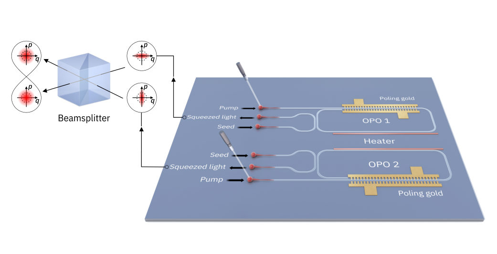
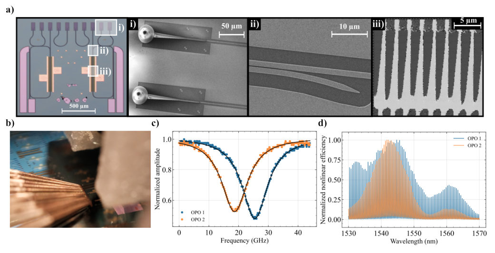
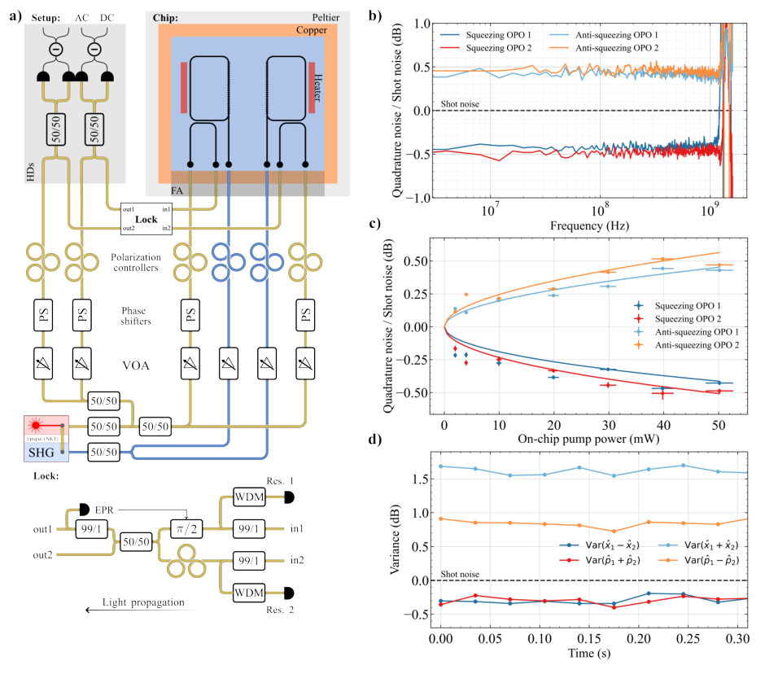
Summary. Researchers have successfully integrated two independently tunable squeezed-light sources on a single thin-film lithium niobate chip. By interfering these sources, they demonstrated the generation of continuous-variable entanglement. This provides a scalable pathway for building complex, integrated quantum photonic circuits.
Why it may be interesting. This work is highly relevant to quantum optics and quantum information as it demonstrates a scalable hardware building block for continuous-variable quantum computing and large-scale Gaussian photonic circuits.
Main problem. The need for scalable, integrated, and independently controllable nonclassical light sources on a single platform for continuous-variable quantum information processing.
Main result. Demonstration of two indistinguishable and independently tunable optical parametric oscillators (OPOs) on a single thin-film lithium niobate (TFLN) chip, used to generate EPR-type two-mode entanglement.
Method. Fabrication of TFLN waveguides with periodic poling, use of on-chip micro-heaters for resonance tuning, and interference of the two squeezed modes on an off-chip beam splitter followed by balanced homodyne detection.
Model / system. An integrated photonic platform based on X-cut thin-film lithium niobate (TFLN) on SiO2, featuring two single-resonant OPOs utilizing spontaneous parametric down-conversion at telecom wavelengths (1550 nm).
Key observables. Squeezing levels (dB), Duan-Simon inseparability criterion value, quadrature variances, and OPO pump power thresholds.
Important parameters / regimes. Signal wavelength ~1550 nm, pump wavelength ~775 nm, squeezing up to 0.5 dB, total efficiency ~0.53-0.54, and OPO thresholds between 15-23 W.
Assumptions / limitations. The system operates in the low-pump regime well below the OPO threshold.
Figures summary. Figure 1 shows the device schematic and experimental setup; Figure 2 displays the fabricated chip layout and SEM images of waveguides; Figure 3 presents the squeezing spectrum, power dependence, and quadrature variance measurements.
Paper structure. The paper introduces the scalability problem, describes the TFLN device architecture and fabrication, details the experimental tuning and entanglement generation setup, presents the measurement of squeezing and entanglement, and concludes with limitations and future directions.
Scalable generation of nonclassical light sources on an integrated platform is a key requirement for photonic quantum information processing. In particular, realizing multiple indistinguishable squeezed light sources on a single chip is an essential step toward continuous-variable quantum computing. Here, we demonstrate the fabrication of two indistinguishable and independently controllable optical parametric oscillators on a thin-film lithium niobate (TFLN) platform. The device design focuses on reproducibility, independent tunability, and compatibility with larger telecom-wavelength continuous-variable photonic circuits. We observe up to 0.5 dB of directly measured squeezing below the shot-noise level from each source. By interfering the two modes on a beam splitter, we generate an EPR-type two-mode squeezed state and verify continuous-variable entanglement through violation of the Duan-Simon inseparability criterion. This is the first demonstration of two independently tunable squeezed-light sources on a single TFLN chip and their use for generating continuous-variable entanglement.
Authors: Tobias Haug, Xhek Turkeshi, Piotr Sierant
Type: both · Category: quantum information and computing · PDF: https://arxiv.org/pdf/2605.26218v1
Analysis basis: full PDF text, analyzed in chunks
Topic relevance: 🔥 QC/QI experiment 4/5 · entanglement & information structure 3/5 · quantum measurements 3/5 · Keldysh / 2PI / non-Gaussian methods 2/5
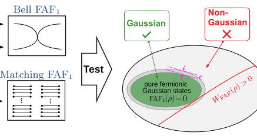
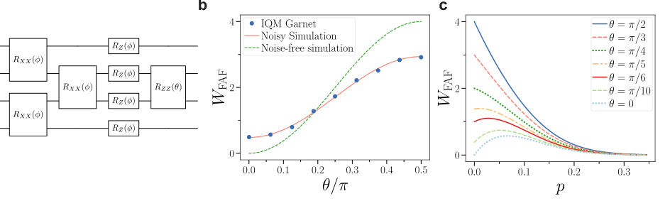
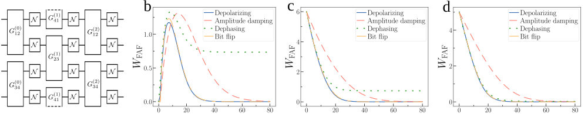
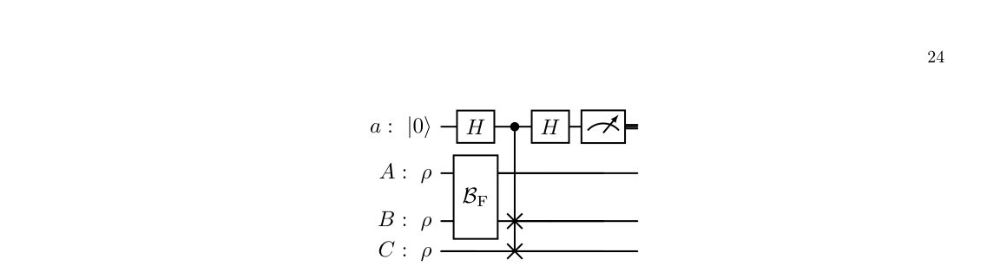
Summary. This paper presents new, efficient protocols for detecting and quantifying non-Gaussianity in fermionic systems using both single-copy and two-copy measurement schemes. It introduces a noise-robust witness for mixed states and demonstrates the practical utility of these tools on a real quantum processor. The work establishes a fundamental link between non-Gaussianity and the complexity of generating pseudorandom fermionic states.
Why it may be interesting. This is highly relevant for many-body dynamics and quantum computing as it provides tools to certify non-trivial correlations and 'magic' resources in fermionic systems, which are harder to detect than standard entanglement or coherence.
Main problem. Developing scalable and practical methods to detect, witness, and quantify fermionic non-Gaussianity, which is essential for benchmarking quantum devices and certifying fermionic magic resources.
Main result. The authors introduce efficient two-copy Bell measurement and single-copy protocols for estimating fermionic antiflatness (FAF), demonstrating improved scaling in qubit number and error tolerance, and showing that noise can both reduce and enhance non-Gaussianity.
Method. The study utilizes two-copy Bell measurements on pairs of states and a single-copy scheme based on commuting Majorana bilinear matchings, alongside a new purity-corrected FAF witness for mixed states.
Model / system. The system consists of n fermionic modes described by 2n Majorana operators, mapped to n qubits via the Jordan-Wigner transformation, and tested on the IQM Garnet quantum computer.
Key observables. Fermionic Antiflatness (FAF1), Gaussian fidelity (F_AF), purity-corrected FAF witness (W_FAF), and quadratic Fock-basis coherence (C2).
Important parameters / regimes. Number of qubits (n), distance to the Gaussian set (epsilon_G), noise parameter (p), and non-Gaussian gate angle (theta).
Assumptions / limitations. The single-copy protocol assumes the ability to implement Clifford circuits and Pauli measurements; the two-copy protocol assumes access to two copies of the quantum state.
Figures summary. Figure 1 shows the two estimation protocols; Figure 2 details the Bell-measurement readout; Figure 3 shows experimental results on IQM Garnet; Figure 4 illustrates the evolution of the witness under various noise models; Figure 5 depicts the three-copy convolution test.
Paper structure. The paper introduces the problem of non-Gaussianity detection, develops new two-copy and single-copy estimation protocols, provides complexity analysis, introduces a robust witness for mixed states, validates results on a quantum computer, and explores the link to pseudorandomness and gate complexity.
Detecting when a quantum state leaves the efficiently simulable fermionic Gaussian regime is a central task for benchmarking quantum devices and certifying fermionic magic resources. We develop practical tests and witnesses based on fermionic antiflatness (FAF), a covariance-matrix-based measure of non-Gaussianity. For $n$-qubit states, we estimate FAF using two complementary protocols: two-copy Bell measurements and a single-copy scheme based on commuting matchings of Majorana bilinears. These yield testers that distinguish pure Gaussian states from states $ε$-far from the Gaussian set, using $O(n^2/ε^2)$ two-copy Bell measurements or $O(n^3/ε^4)$ single-copy measurements, improving the state of the art in the dependence on both $n$ and $ε$. For mixed states, we introduce a purity-corrected FAF witness that certifies non-Gaussianity and is highly robust to noise. With our witness, we demonstrate on the IQM quantum computer that noise can both reduce and enhance non-Gaussianity. Finally, by examining pseudo non-Gaussianity, we show that the cryptographic task of pseudorandom-state generation requires extensive fermionic non-Gaussianity. Together, these results provide experimentally accessible tools for detecting, witnessing, and quantifying non-Gaussian fermionic resources.
Authors: Antonio Verdú, Ana Teresa Gea-Caballero, Santiago Oviedo-Casado, Fedor Jelezko, Javier Prior
Type: both · Category: quantum information and computing · PDF: https://arxiv.org/pdf/2605.26863v1
Analysis basis: full PDF text, analyzed in chunks
Topic relevance: 🔥 QC/QI experiment 4/5 · spintronics-quantum-optics interface 3/5 · non-equilibrium dynamics 2/5



Summary. The paper introduces the ZENITH protocol, a new pulse sequence designed to eliminate dipolar interactions in NV center ensembles at zero magnetic field. By using universal qutrit control, the method significantly extends coherence times and enables high-sensitivity DC magnetometry. This advancement is crucial for quantum technologies operating in environments where external magnetic fields cannot be applied.
Why it may be interesting. It provides a general framework for controlling interacting degenerate multilevel systems (qutrits) and offers a method to suppress many-body interactions without external bias fields, which is highly relevant to open quantum systems and quantum sensing.
Main problem. The decoherence of dense Nitrogen-Vacancy (NV) center ensembles in diamond caused by dipolar interactions, especially in the absence of a bias magnetic field which is usually required to lift degeneracy.
Main result. The development of the ZENITH protocol, an 11-pulse sequence that achieves full dipolar decoupling at zero field, providing over two orders of magnitude improvement in coherence time and enabling enhanced DC magnetometry.
Method. The authors use Average Hamiltonian Theory and a group-theoretical Cayley graph approach to design a pulse sequence that cancels both energy-conserving and non-energy-conserving dipolar terms via universal qutrit control.
Model / system. Ensembles of Nitrogen-Vacancy (NV) centers in diamond, modeled as a spin-1 (qutrit) system with a V-degenerate ground state manifold subject to dipole-dipole interactions.
Key observables. Survival probability of qutrit coherent states, protection factor (coherence time ratio), and frequency estimation error for DC magnetometry.
Important parameters / regimes. Zero-field or low-bias magnetic field regime, dipolar interaction strength (J_T), and NV center concentrations (e.g., 15 ppm and 45 ppm).
Assumptions / limitations. Rotating wave approximation (RWA), neglecting fast-rotating terms, and assuming the driving frequency is much smaller than the zero-field splitting (Omega << D).
Figures summary. Fig 1 shows the experimental setup and the ZENITH pulse sequence; Fig 2 illustrates the Cayley graph construction and decoupling logic; Fig 3 compares survival probability between FID and ZENITH; Fig S2 demonstrates DC signal sensing and error metrics.
Paper structure. The paper introduces the problem of dipolar decoherence, defines the Hamiltonian and control framework, presents the ZENITH sequence construction using group theory, validates the protocol via numerical simulations, and demonstrates its utility for DC magnetometry.
Dipolar interactions are a major source of decoherence in dense ensembles of color centers in diamond. Current protocols demand using bias magnetic fields detrimental in many scenarios. We present ZENITH (Zero-field Ensemble Neutralization via Interleaved Trilevel Handling), a pulsed sequence to cancel dipolar interactions among V-degenerate spin-1 systems. We reveal excellent coherence survival, compatibility with existing sensing sequences, and improved DC detection, advancing a general framework to control interacting degenerate multilevel systems, of broad interest in quantum technologies.
Authors: Xiaoshui Lin, Chunlei Qu, Chong Zu, Chuanwei Zhang
Type: both · Category: other · PDF: https://arxiv.org/pdf/2605.26377v1
Analysis basis: full PDF text, analyzed in chunks
Topic relevance: 🔥 quantum measurements 4/5 · Keldysh / 2PI / non-Gaussian methods 2/5 · entanglement & information structure 2/5
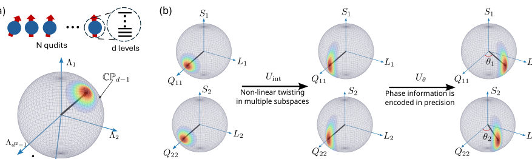
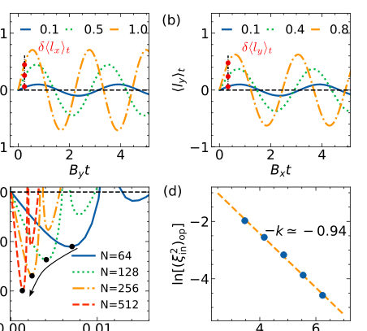
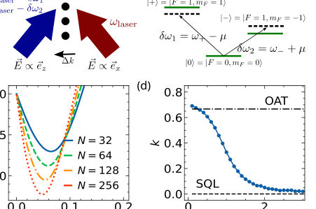
Summary. The paper shows that using qudits instead of qubits allows a single ensemble to perform simultaneous multi-parameter sensing. It establishes a mathematical framework for this effect and demonstrates significant metrological gain in a simulated trapped-ion system.
Why it may be interesting. It provides a new route to multiparameter metrology by expanding the local Hilbert space, offering a distinct advantage over distributed architectures in the fixed-sensor-budget regime, which is highly relevant for quantum sensing and many-body dynamics.
Main problem. Achieving simultaneous multiparameter sensing (e.g., vector magnetic field detection) within a single collective ensemble, which is typically limited to single-parameter metrology in qubit-based systems.
Main result. By promoting local sensors from qubits to qudits, the authors demonstrate that a single ensemble can support multiparameter squeezing, achieving up to 12 dB enhancement in a trapped-ion qutrit chain.
Method. A general framework based on the single-site Quantum Fisher Information Matrix (QFIM) to determine optimal probe states and readout observables, combined with Discrete Truncated Wigner Approximation (DTWA) for numerical simulations.
Model / system. A single ensemble of N identical d-level qudit sensors, specifically implemented as a trapped-ion qutrit chain with power-law interactions and a collective twisting-like interacting Hamiltonian.
Key observables. Multiparameter squeezing parameter (xi^2), collective spin operators (S_alpha), Symmetric Logarithmic Derivatives (SLD), and transduction-rate operator matrix (G_alpha_beta).
Important parameters / regimes. Local dimension (d), number of sensors (N), power-law interaction exponent (gamma), and the Standard Quantum Limit (SQL).
Assumptions / limitations. The ensemble is initially in a direct product state; the optimization assumes the ability to implement optimal SLD measurements; the framework is subject to the Matsumoto weak-commutativity theorem.
Figures summary. Figure 1(a) provides a schematic of qudits and their phase space using SU(d) generators, illustrating how multiple independent response channels can coexist.
Paper structure. The paper identifies the limitations of qubit-based sensing, proposes a qudit-based solution, develops a mathematical framework using QFIM, demonstrates a concrete qutrit implementation, and provides numerical evidence using a trapped-ion model.
Quantum-enhanced multiparameter sensing is often associated with distributed architectures or 2-anticoherent states, whereas squeezing in a single collective ensemble is typically limited to single-parameter metrology. Here, we show that a single ensemble can support simultaneous multiparameter squeezing when each sensor is promoted from a qubit to a qudit (i.e., spin with $d$ energy levels). We develop a general framework in which the optimal product probe state, the corresponding global readout observables, and the associated squeezing parameters are all determined from the single-site quantum Fisher information matrix. We then present a minimal qudit construction for two-parameter vector magnetic field sensing with local dimension $d=3$. We further identify a collective twisting-like interacting Hamiltonian that generates such multiparameter-squeezed states and numerically demonstrate scalable metrological gain. In particular, for a trapped-ion qutrit chain with power-law interactions, we obtain up to 12 dB enhancement in two-parameter sensing for $N=256$ sensors. Our results establish qudit-enabled multiparameter squeezing in a single ensemble as a distinct route to multiparameter quantum metrology with global readout, and highlight its potential advantage over distributed multi-ensemble strategies in the fixed-sensor-budget regime.
Authors: Loïc Millet, Boris Korzh, Rob Thew, Gianluca Boso
Type: both · Category: quantum information and computing · PDF: https://arxiv.org/pdf/2605.26705v1
Analysis basis: full PDF text, analyzed in chunks
Topic relevance: 🔥 QC/QI experiment 4/5 · quantum optics experiment 2/5 · quantum measurements 1/5
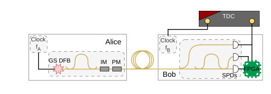
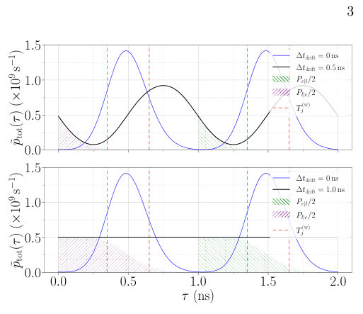
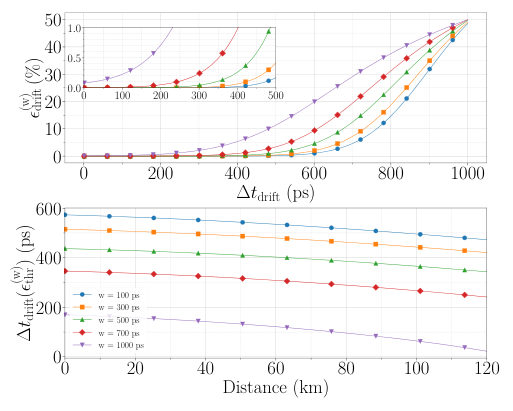
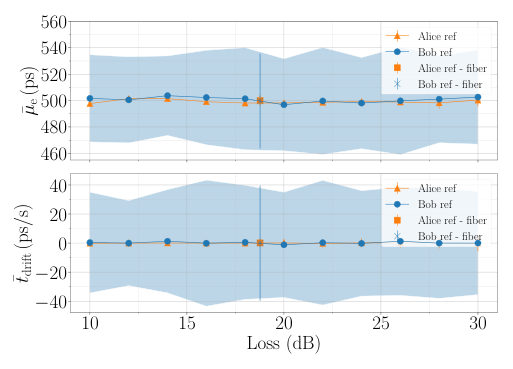
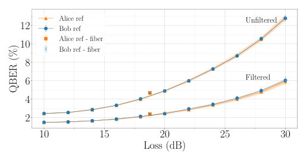
Summary. This paper presents an analytical model and a practical algorithm to synchronize clocks in quantum key distribution without needing extra communication channels. By using detection timestamps to compensate for frequency mismatch, the method enables robust, long-term QKD operation even in high-loss fiber networks.
Why it may be interesting. not directly relevant
Main problem. Clock frequency mismatch between transmitter and receiver in time-bin QKD causes time shifts that increase the Quantum Bit Error Rate (QBER). The goal is to develop a synchronization method that does not require a dedicated service channel or auxiliary qubit sequence.
Main result. The authors developed a lightweight synchronization algorithm that recovers clock drift and compensates for time offsets directly from detection timestamps, achieving stable operation over 24 hours in a metropolitan network with performance equivalent to a dedicated service channel.
Method. The paper uses an analytical model of clock drift and a synchronization algorithm based on the circular means of consecutive folded histograms to estimate frequency mismatch and time-offset fluctuations.
Model / system. A fiber-based time-bin BB84 QKD system using commercial hardware (ID Quantique Clavis XG) including gain-switched DFB lasers, modulators, and SPADs, deployed in both laboratory (100 km fiber) and field (16 km Geneva Quantum Network) settings.
Key observables. Quantum Bit Error Rate (QBER), photon detection-time probability distribution, clock drift rate, and Time Deviation (TDEV).
Important parameters / regimes. Frequency mismatch (delta f), time-bin duration (T_bin), integration time (T_int), channel loss (up to 30 dB), and detector jitter.
Assumptions / limitations. The frequency mismatch is assumed constant over a single integration time, and the clock drift follows a linear/aging model where the shift between consecutive acquisitions is less than half a bin width.
Figures summary. Figure 1 shows the experimental setup; Figure 2 illustrates the PDF of photon arrival times under different drift levels; Figure 6 demonstrates the 24-hour stability of the GQN network (drift, detection time, and QBER); Figure 7 shows the error in drift estimation with and without Poissonian noise.
Paper structure. The paper introduces the problem of clock drift, presents an analytical model for the resulting QBER, describes the proposed synchronization algorithm, details the experimental setup and field deployment, and concludes with error analysis and stability constraints.
Clock synchronization is critical for maintaining low error rates in quantum key distribution. Here, we describe how a frequency mismatch between the transmitter and receiver clocks affects the quantum bit error rate in quantum key distribution, and derive from this model a simple synchronization algorithm together with clock stability requirements for practical operation. Our algorithm continuously compensates for both frequency mismatch and time-offset fluctuations directly from detection timestamps. It does not require a dedicated synchronization channel or auxiliary qubit sequence, converges from a large frequency mismatch within approximately one second of photon acquisition, and remains effective in low-photon-count regimes (more than 30 dB of channel loss) using standard hardware. We validate our approach by demonstrating successful key exchange over 100 km of fiber and continuous operation over 24 hours in a 16 km metropolitan network using commercial systems, with performance equivalent to using a service channel for clock synchronization.
Authors: V. Yogesh, Prosenjit Maity
Type: theory · Category: quantum information and computing · PDF: https://arxiv.org/pdf/2605.26622v1
Analysis basis: full PDF text, analyzed in chunks
Topic relevance: 🔥 entanglement & information structure 4/5 · analog quantum simulation 2/5
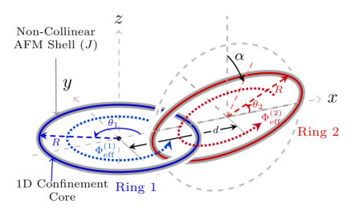
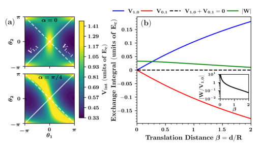
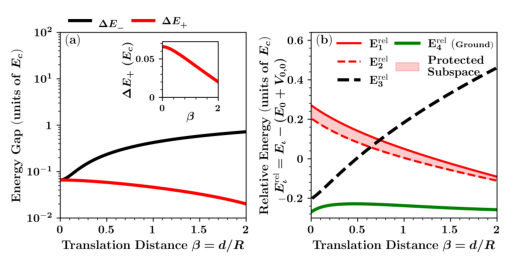
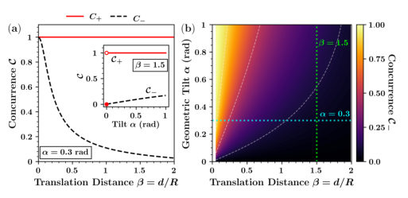
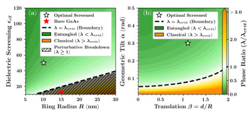
Summary. The study demonstrates how the non-coplanar geometry of interlocked quantum rings can protect Bell-state entanglement from Coulomb-driven decay. However, it also establishes a fundamental limit where high-order orbital transitions eventually trigger entanglement collapse. This defines the necessary conditions for achieving robust topological protection in semiconductor-based quantum architectures.
Why it may be interesting. It provides a theoretical framework for using geometric topology and spatial symmetry to protect entanglement against many-body interactions, which is highly relevant for designing robust qubits in mesoscopic or synthetic platforms.
Main problem. Investigating the stability of bipartite entanglement (specifically Bell states) in Hopf-linked quantum rings against interaction-driven localization and parity mixing.
Main result. Identified a geometric protection mechanism via non-coplanar tilt that isolates the positive-parity Bell state, but discovered a critical interaction threshold (lambda_crit) beyond which higher-order transitions cause irreversible entanglement collapse.
Method. Exact diagonalization of the unexpanded 3D Coulomb interaction combined with a higher-order Schrieffer-Wolff transformation and symmetry analysis using a magnetic point group.
Model / system. Two interacting electrons confined to spatially separated, non-coplanar 1D quantum rings forming a Hopf-linked topology, subject to a local Rashba spin-orbit field and 3D Coulomb repulsion.
Key observables. Concurrence (C), exchange gap (Delta E+), and the interaction strength parameter (lambda).
Important parameters / regimes. Geometric tilt angle (alpha), interlocking parameter (beta), interaction ratio (lambda), and the dimensionless bounding constant (u_cross).
Assumptions / limitations. Negligible intra-band energy splittings compared to kinetic separation; use of the Heitler-London approximation for wavefunction overlap; assumes a hard-wall vacuum barrier to suppress direct tunneling.
Figures summary. Fig 1 shows the Hopf-linked geometry and parameters; Fig 2 illustrates the Coulomb landscape; Fig 4 shows 1D parameter slices of concurrence demonstrating entanglement protection vs. decay.
Paper structure. The paper introduces the Hopf-linked system, defines the Hamiltonian and geometric parameters, proves the spatial symmetry for protection, applies Schrieffer-Wolff to find the collapse threshold, and discusses implementation constraints in semiconductor architectures.
We determine the bipartite entanglement bounds of two interacting electrons in deeply interlocked Hopf-linked quantum rings via exact diagonalization of the unexpanded 3D Coulomb interaction. This identifies an exact continuous spatial symmetry that geometrically isolates the positive-parity Bell state, preventing classical interaction-driven localization. A non-coplanar geometric tilt ($α> 0$) is essential to lift the exchange degeneracy and maintain this maximally entangled manifold as a state of frozen entanglement. However, a higher-order Schrieffer-Wolff transformation demonstrates this geometric protection is fundamentally bounded; uncancelled inter-orbital momentum transitions inevitably induce dynamical parity mixing. This defines a critical interaction threshold ($λ_{crit}$) for irreversible entanglement collapse. Our analysis shows that the resulting bounding conditions reveal scaling limitations in mesoscopic semiconductor architectures, dictating the necessity of synthetic macroscopic platforms to achieve robust topological protection.
Authors: Alberto Cortijo
Type: theory · Category: strongly correlated electrons · PDF: https://arxiv.org/pdf/2605.26226v1
Analysis basis: full PDF text, analyzed in chunks
Topic relevance: 🔥 Keldysh / 2PI / non-Gaussian methods 4/5 · non-equilibrium dynamics 2/5
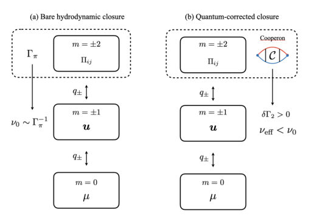
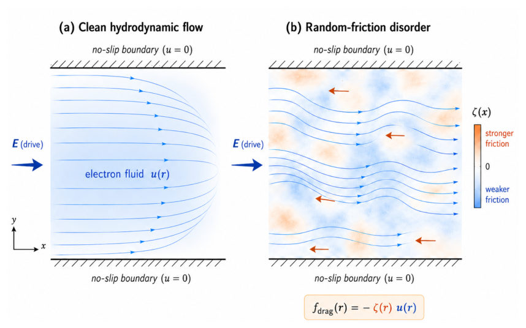
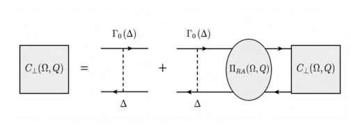
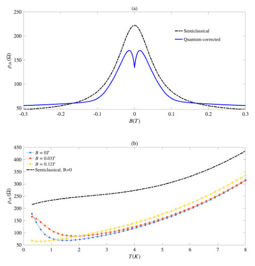
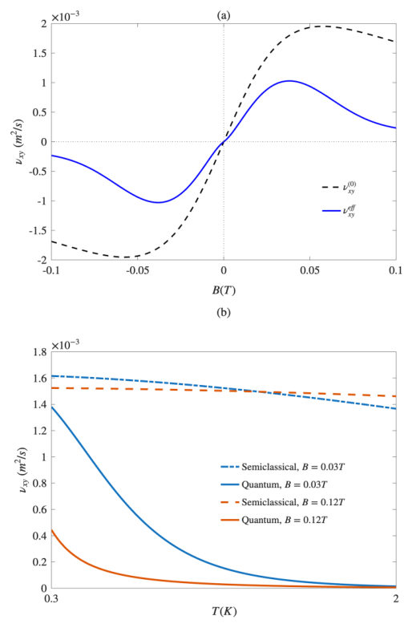
Summary. The paper derives a theory for quantum interference effects in electron fluids, specifically identifying a 'hydrodynamic Cooperon' that modifies stress relaxation. This mechanism predicts unique signatures in the magnetoresistance and Hall viscosity of high-mobility 2D electron gases, distinguishing quantum corrections from classical magnetohydrodynamic effects.
Why it may be interesting. not directly relevant
Main problem. Developing a consistent Schwinger-Keldysh effective theory for quantum-interference corrections (hydrodynamic Cooperons) in the hydrodynamic regime of 2D electron systems and determining their impact on transport properties.
Main result. The theory shows that the hydrodynamic Cooperon renormalizes the spin-two stress sector, leading to a reduction in effective shear viscosity and a characteristic low-field magnetoresistance dip/shoulder.
Method. Real-time Schwinger-Keldysh field theory combined with a diagrammatic ladder resummation (Bethe-Salpeter equation) and the self-consistent Born approximation.
Model / system. A two-dimensional electron system in the hydrodynamic regime (high-mobility conductors) subject to a minimal random-friction disorder model that introduces momentum relaxation.
Key observables. Shear viscosity, longitudinal and Hall viscosities, channel magnetoresistance, and stress relaxation rate.
Important parameters / regimes. Momentum-relaxation time (tau_mc), cyclotron frequency (omega_c), shear viscosity (nu), and the hydrodynamic ultraviolet cutoff (Lambda).
Assumptions / limitations. Weak-damping/weak-relaxation limit, truncation of the angular harmonic hierarchy to m=0, +/-1, and +/-2, and the use of a sharp hydrodynamic momentum cutoff.
Figures summary. Figure 1 depicts the harmonic hierarchy of modes; Figure 4 shows the predicted low-field magnetoresistance dip and nonmonotonic temperature dependence; Figure 5 illustrates the Hall-viscosity kink and its temperature dependence.
Paper structure. The paper introduces the hydrodynamic problem, develops the Schwinger-Keldysh framework with a random-friction disorder model, derives the Cooperon pole and its renormalization of the stress sector, analyzes the effect of a magnetic field (orbital dephasing and viscosity modification), and concludes by identifying experimental signatures in magnetoresistance and Hall viscosity.
We develop a Schwinger--Keldysh effective theory for quantum-interference corrections in a two-dimensional electron system in the hydrodynamic regime. Starting from the clean hydrodynamic fixed point, we introduce a minimal random-friction disorder model that generates a finite momentum-relaxation time within the self-consistent Born approximation. The disorder-averaged theory then allows us to construct a hydrodynamic Cooperon and to compute the associated self-energy corrections to the collective modes. Conservation laws protect the density and momentum sectors, so that the leading quantum-coherence correction is forced into the spin-two stress sector. The associated stress self-energy renormalizes the shear viscosity and modifies both the Gurzhi response and its low-field magnetohydrodynamic signatures.
Authors: Mohsen Kian
Type: theory · Category: quantum information and computing · PDF: https://arxiv.org/pdf/2605.26272v1
Analysis basis: full PDF text, analyzed in chunks
Topic relevance: 🔥 entanglement & information structure 4/5 · methods for driven-dissipative 2/5
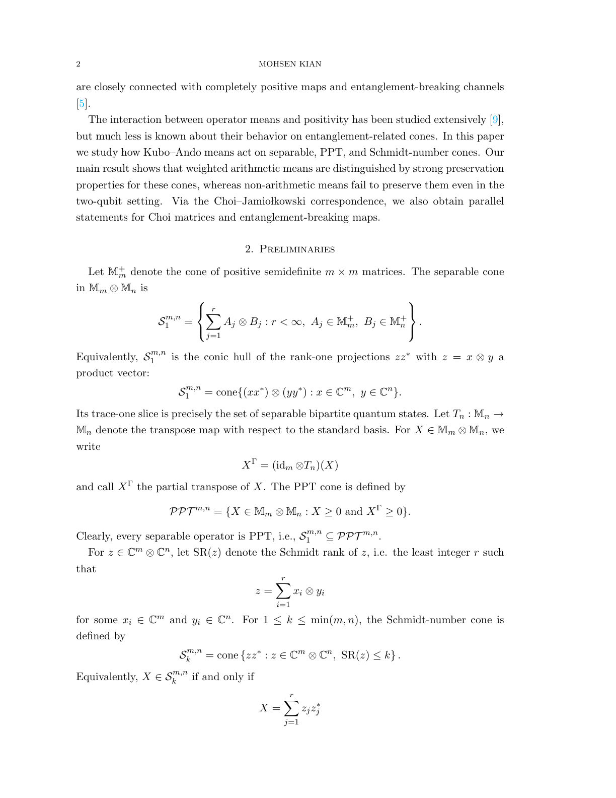
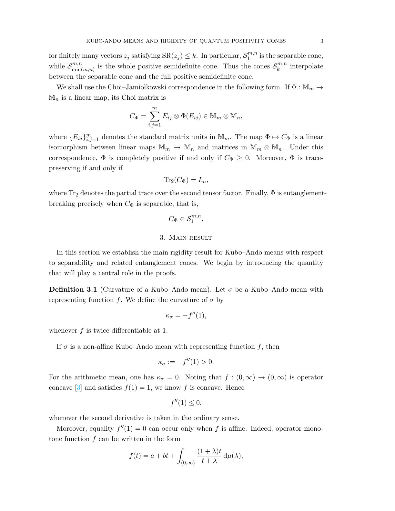
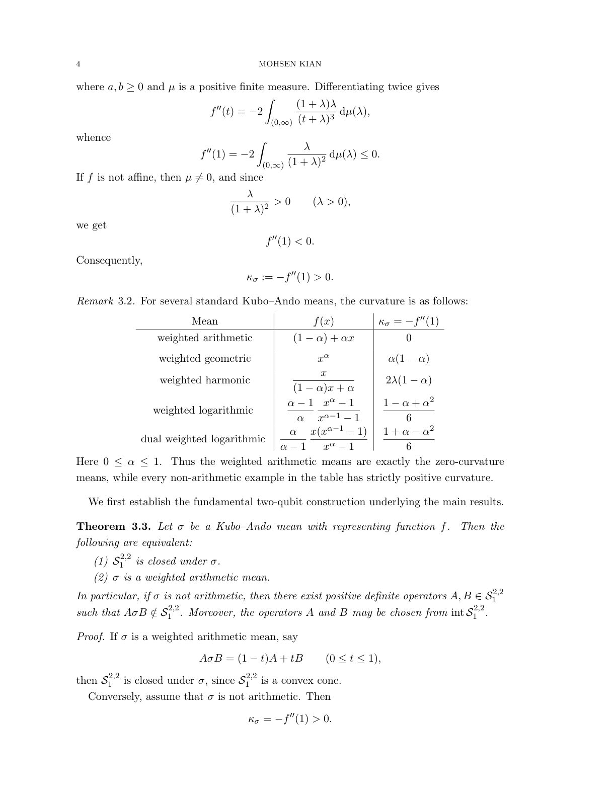
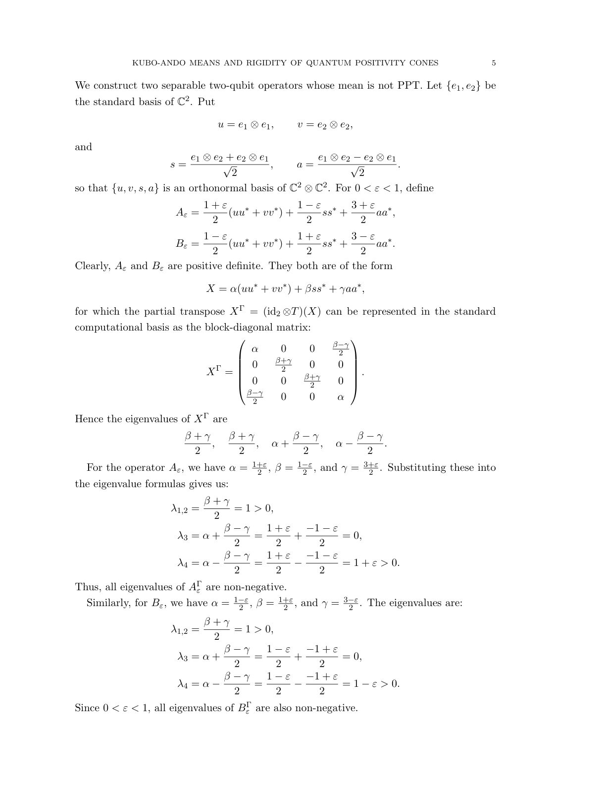
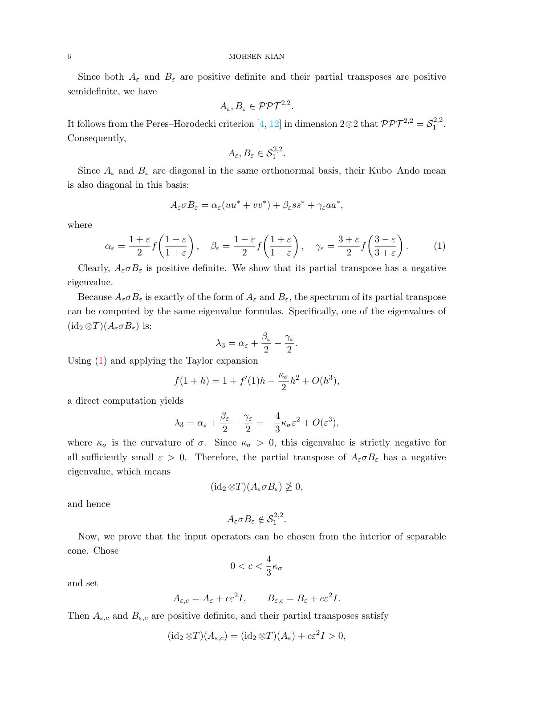
Summary. This paper demonstrates that only standard convex mixing (arithmetic means) preserves the essential entanglement-related properties of quantum states and channels. It shows that any other type of Kubo-Ando averaging can destroy separability or increase the complexity of entanglement (Schmidt number).
Why it may be interesting. This is highly relevant for researchers in open quantum systems and quantum information, as it establishes fundamental limits on how non-linear averaging processes can affect entanglement and the structural integrity of quantum channels.
Main problem. The paper investigates the stability and rigidity of quantum positivity cones (separable, PPT, and Schmidt-number cones) under the action of nonlinear Kubo-Ando operator means.
Main result. The authors prove that weighted arithmetic means are the only Kubo-Ando means that preserve the separable cone and the class of entanglement-breaking channels; all other means can increase Schmidt numbers or violate the PPT condition.
Method. The study uses curvature analysis of operator monotone functions, Taylor expansions, and the construction of explicit two-qubit counterexamples, extended to higher dimensions via canonical isometries and the Choi-Jamiołkowski correspondence.
Model / system. The mathematical framework involves bipartite tensor product spaces (C^m tensor C^n) and the study of operator means acting on positive operators and quantum channels.
Key observables. Schmidt number, PPT (positive partial transpose) property, and separability.
Important parameters / regimes. The curvature of the operator monotone function (kappa_sigma), where kappa_sigma = 0 corresponds to arithmetic means and kappa_sigma > 0 corresponds to non-arithmetic means.
Assumptions / limitations. The results specifically address the behavior of non-arithmetic Kubo-Ando means and assume the use of the Choi-Jamiołkowski correspondence to relate operators to maps.
Paper structure. The paper begins by defining the curvature of Kubo-Ando means, moves to proving rigidity theorems for separable and PPT cones using two-qubit counterexamples, extends these results to Schmidt-number cones, and concludes by translating these findings to the theory of quantum channels.
We investigate the stability of quantum positivity cones under nonlinear operator means. Specifically, we examine how Kubo--Ando means interact with the separable, positive partial transpose (PPT), and Schmidt-number cones. By analyzing the curvature of operator monotone functions at the identity, we give a strict rigidity phenomenon: weighted arithmetic means are the only Kubo--Ando means that preserve the separable cone in all dimensions. We show that the strictly positive curvature of any non-arithmetic mean explicitly forces a violation of the PPT condition, even in the foundational two-qubit setting, and can strictly increase the Schmidt number of the resulting operator. Finally, using the Choi--Jamiołkowski correspondence, we translate these geometric obstructions to the map-theoretic setting, concluding that convex mixing is the uniquely permissible Kubo--Ando operation for preserving entanglement-breaking quantum channels.
Authors: Elisa Bäumer Marty
Type: both · Category: quantum information and computing · PDF: https://arxiv.org/pdf/2605.26757v1
Analysis basis: full PDF text, analyzed in chunks
Topic relevance: 🔥 QC/QI experiment 4/5 · entanglement & information structure 2/5
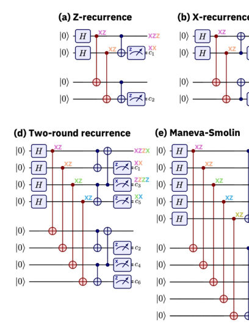
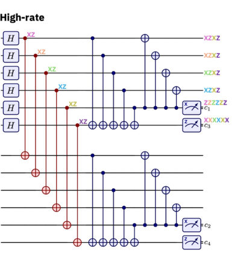
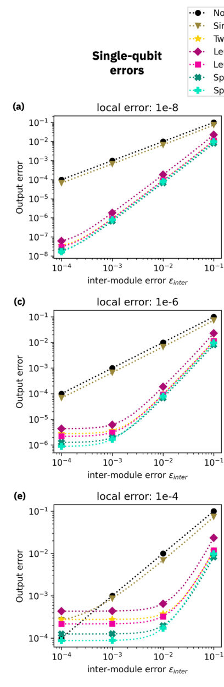
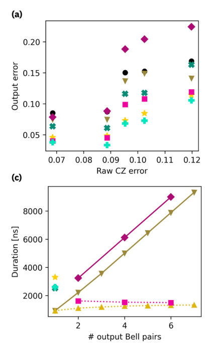
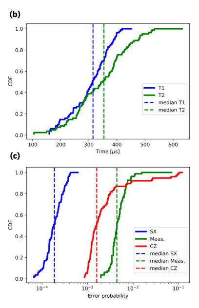
Summary. This paper introduces new, highly efficient entanglement distillation protocols designed for modular quantum computing. By using inter-module gates as active components, the proposed protocols achieve quadratic error suppression using only two qubits per module, making them practical for near-term hardware.
Why it may be interesting. not directly relevant
Main problem. Inter-module operations in modular quantum computing architectures exhibit much higher error rates than local operations, creating a bottleneck for scaling. Existing entanglement distillation protocols are often too resource-intensive in terms of qubits and time for near-term hardware.
Main result. The authors developed a space-optimal distillation protocol requiring only two qubits per module that achieves quadratic error suppression of inter-module errors. This protocol outperforms existing small-scale protocols in both simulations and experiments on superconducting hardware.
Method. The study uses a generalized resource model where inter-module entangling operations are used actively during the protocol. The researchers compared new protocols against established ones using numerical simulations and experimental implementation on the IBM pittsburgh processor.
Model / system. The system is a modular quantum computing architecture, specifically implemented and tested on the IBM pittsburgh superconducting quantum processor. The noise model uses a stochastic Pauli channel with single-qubit and two-qubit correlated errors.
Key observables. Bell-state fidelity, normalized error, output error rate, and protocol duration (depth and wall-clock time).
Important parameters / regimes. Inter-module error rate (epsilon_inter), local error rates, qubit count per module, and gate durations (e.g., 88 ns for CZ, 32 ns for single-qubit gates).
Assumptions / limitations. Local operations and measurements are assumed to be significantly more reliable than inter-module operations; the low-error regime is the primary focus.
Figures summary. Figure 1 shows existing recurrence and large-scale protocols; Figure 2 illustrates the new space-optimal and high-rate protocols; Figure 3 shows simulations of output error vs. inter-module error; Figure 4 presents experimental results comparing error suppression and protocol duration on IBM hardware; Figure 5 shows the device layout and hardware noise statistics.
Paper structure. The paper introduces the bottleneck of inter-module errors, proposes new space-efficient distillation protocols, provides analytical error suppression analysis, compares these protocols to existing methods via simulation, and validates the results through experiments on a superconducting processor.
Near-term and early fault-tolerant quantum computing architectures are expected to exhibit highly non-uniform error rates. In particular, local operations within a chip can be substantially more reliable than operations connecting different chips or dilution refrigerators. Such inter-module operations can therefore become a dominant bottleneck, even when quantum error correction is applied. Entanglement distillation provides a natural way to trade additional operations and qubits for higher-fidelity entanglement. Standard distillation protocols, however, are usually formulated in an LOCC resource model, in which several noisy Bell pairs are generated initially and all subsequent processing consists only of local operations and classical communication. Here, we consider a generalized model tailored to modular quantum computing hardware, in which the two modules have access to high-fidelity local operations and to repeated uses of the same noisy inter-module entangling operation during the protocol. We develop practical small-scale entanglement distillation protocols designed to minimize both space and time overhead. Remarkably, our main protocol requires only two qubits per module, yet achieves quadratic error suppression of inter-module errors, assuming local operations are much cleaner. Compared with existing small-scale protocols, our space-optimal protocol provides more space- and time-efficient quadratic error suppression and achieves the best performance in our simulations and experiments on noisy links of current superconducting quantum processors. These results suggest that inter-module-gate-assisted entanglement distillation can be a practical primitive for overcoming noisy links in modular quantum computing architectures.
Authors: Stanislav Yu. Kruchinin
Type: theory · Category: strongly correlated electrons · PDF: https://arxiv.org/pdf/2605.26887v1
Analysis basis: full PDF text, analyzed in chunks
Topic relevance: 🔥 Kondo & dissipative impurity 4/5 · Keldysh / 2PI / non-Gaussian methods 2/5
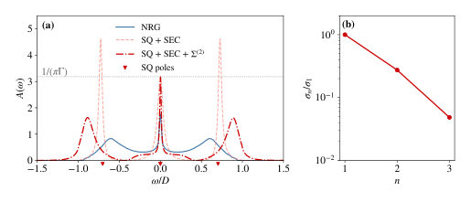
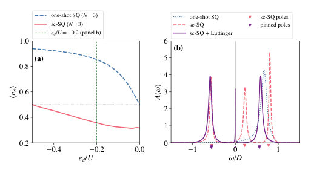
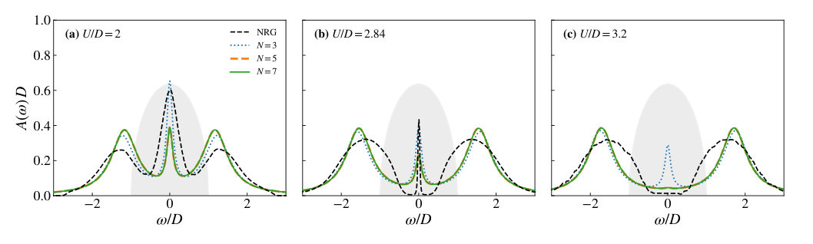
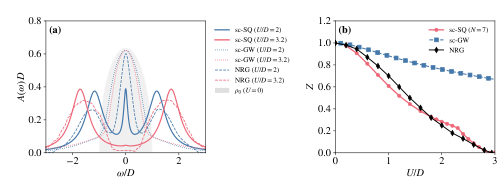
Summary. This paper introduces a new self-consistent method for calculating many-body Green functions using spectral quadrature. By using an SVD-based criterion to select the optimal number of poles, the approach captures essential strongly correlated physics, such as the Mott transition and Kondo resonance, more accurately than traditional one-shot methods.
Why it may be interesting. The method provides a non-perturbative, numerically stable way to reconstruct spectral functions and capture complex many-body features like Kondo resonances and Mott transitions without the need for external terminators or diagrammatic expansions.
Main problem. The difficulty of calculating many-body Green functions for strongly correlated systems where standard power-series expansions fail to capture non-perturbative phenomena like the Mott transition or Kondo resonance.
Main result. The development of a self-consistent spectral quadrature (sc-SQ) framework that accurately captures the three-peak structure of the Anderson impurity model and the Mott gap formation in the Hubbard model, with results qualitatively agreeing with NRG.
Method. A self-consistent framework using Gauss-Christoffel quadrature to approximate the Kallen-Lehmann spectral measure, utilizing an SVD-based rank-selection criterion to identify the numerically resolvable pole rank.
Model / system. The method is benchmarked using the Anderson Impurity Model (AIM) and the Hubbard model on a Bethe lattice within the Dynamical Mean-Field Theory (DMFT) framework.
Key observables. Spectral function A(omega), spectral moments, quasiparticle weight (Z), occupancy, and self-energy.
Important parameters / regimes. Interaction strength (U), bandwidth (D), hybridization (Gamma), and the quadrature pole order (N).
Assumptions / limitations. The accuracy is limited by the number of resolvable spectral moments and the numerical precision of the input moments; the method relies on the ability to resolve the singular-value gap in the Hankel matrix.
Figures summary. Figure 1 compares sc-SQ variants against NRG for the AIM and shows the SVD spectrum; Figure 2 compares one-shot vs. self-consistent approaches in the mixed-valence regime; Figure 3 shows the improvement in spectral resolution as N increases; Figure 4 illustrates the Mott transition and quasiparticle weight.
Paper structure. The paper introduces the sc-SQ framework, establishes mathematical equivalences between quadrature, Padé approximants, and continued fractions, details the SVD-based stabilization and self-consistency algorithm, and concludes with benchmarks against NRG for the Anderson and Hubbard models.
We develop a self-consistent spectral quadrature (sc-SQ) framework for the calculation of many-body Green functions. The method approximates the Källén--Lehmann spectral measure by Gauss--Christoffel (GC) quadrature, yielding a rational Green function representation with guaranteed spectral positivity that exactly reproduces the first $2N$ spectral moments at pole order $N$. A key component is an SVD-based rank-selection criterion on the Hankel matrix, which identifies the numerically resolvable pole rank $N^*$ from the singular-value gap and acts as a precision-guided diagnostic of correlation complexity. The scheme is made self-consistent by requiring that the spectral function used to evaluate expectation values coincides with the spectral function generated by the quadrature reconstruction. This defines a fixed-point hierarchy that connects systematically to established approximations, including Hartree--Fock and Hubbard-I, and incorporates non-perturbative features such as multi-peak spectral structure. We benchmark the approach for the Anderson impurity model against numerical renormalization group (NRG) results and apply it within dynamical mean-field theory for the Hubbard model on the Bethe lattice. The method captures the three-peak Anderson impurity spectrum and the suppression of quasiparticle weight in the half-filled Hubbard model on the Bethe lattice, including Mott-gap formation on the insulating branch for $N\geqslant 5$, in qualitative agreement with NRG references.
Authors: Haftu W. Fentaw, Steve Campbell, Simon Caton
Type: theory · Category: quantum information and computing · PDF: https://arxiv.org/pdf/2605.26925v1
Analysis basis: full PDF text, analyzed in chunks
Topic relevance: 🔥 methods for driven-dissipative 4/5
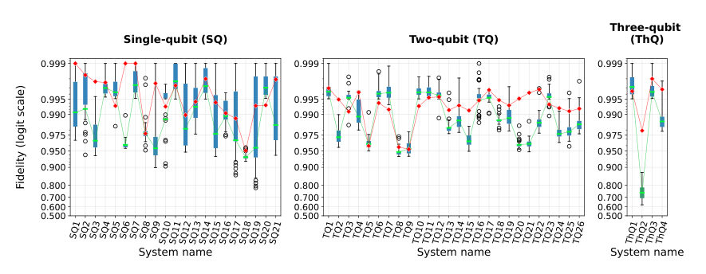
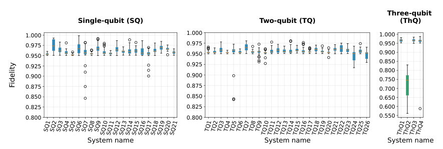
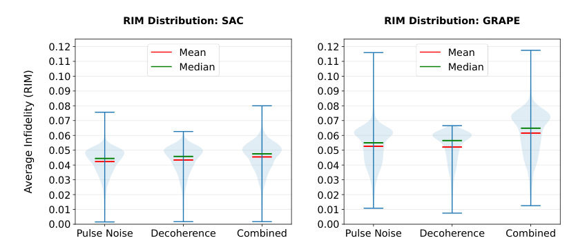
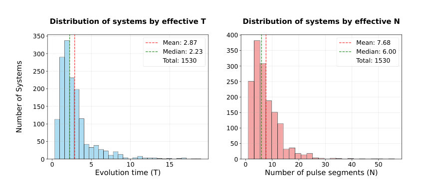
Summary. The paper presents a multi-task reinforcement learning framework that learns to control various quantum systems simultaneously. By optimizing both the control pulses and the timing parameters, the method achieves high-fidelity state transfer and outperforms traditional gradient-based methods in robustness against environmental noise.
Why it may be interesting. This work is highly relevant for researchers in open quantum systems as it provides a scalable, machine-learning-based approach to achieving universal control that is inherently robust to the types of noise and parameter drift encountered in realistic quantum hardware.
Main problem. Developing a robust, unified quantum control framework that generalizes across diverse Hamiltonians and maintains high fidelity in the presence of environmental noise and hardware uncertainties.
Main result. A multi-task Soft Actor-Critic (SAC) reinforcement learning agent achieves high-fidelity state transfer across 51 different Hamiltonians and demonstrates superior robustness to pulse amplitude and decoherence fluctuations compared to the GRAPE algorithm.
Method. A multi-task Soft Actor-Critic (SAC) reinforcement learning framework that uses a system descriptor to condition the policy and simultaneously optimizes control pulse amplitudes, total evolution time (T), and the number of pulse segments (N).
Model / system. Open quantum systems ranging from single-qubit to three-qupi configurations, modeled using the Lindblad master equation to account for amplitude damping and dephasing noise.
Key observables. State transfer fidelity (F) and the Robustness Infidelity Measure (RIM) based on the Wasserstein distance.
Important parameters / regimes. Evolution time (T), number of pulse segments (N), decoherence rate (gamma), and pulse amplitude perturbations.
Assumptions / limitations. The system is prepared in a pure initial state; decoherence is primarily modeled via amplitude damping; the use of Born-Markov and Secular approximations for the Lindblad equation.
Figures summary. Figure 1 compares closed-system fidelities between task-specific and multi-task models; Figure 2 shows open-system fidelity distributions; Figure 3 compares the RIM of SAC versus GRAPE; Figure 4 shows the learned distributions of temporal parameters T and N.
Paper structure. The paper introduces the problem of robust control, describes the multi-task SAC architecture and adaptive temporal optimization, details the training strategy via progressive Hamiltonian expansion, presents benchmarks for closed and open systems, and concludes with a robustness analysis and discussion of scalability.
We present a Multi-task Soft Actor-Critic (SAC) Reinforcement Learning framework designed for open-system quantum control across diverse Hamiltonians, which learns optimal pulse sequences while simultaneously discovering problem-specific evolution time T and number of control pulse segments N. Experimental results across 51 Hamiltonian variations demonstrate that the multi-task SAC model is able to generate control pulses that can drive a system, under environment noise, from its initial state to its target state with high fidelities, establishing essential foundations for universal quantum control applicable to realistic noisy quantum devices. Through progressive expansion of the training Hamiltonian set, we investigate if a single multi-task model trained using a given number of sample Hamiltonians can successfully accomplish state-transfer tasks for Hamiltonians drawn from the same Hamiltonian space but not encountered during training. In addition, our Robustness Infidelity Measure (RIM) analysis reveals that SAC trained policies exhibit superior robustness to pulse amplitude perturbations and decoherence rate variations compared to GRAPE-optimized controls.
Authors: Zheng Liang Lim, Hoi-Kwong Lo
Type: theory · Category: quantum information and computing · PDF: https://arxiv.org/pdf/2605.26866v1
Analysis basis: full PDF text, analyzed in chunks
Topic relevance: 🔥 entanglement & information structure 4/5
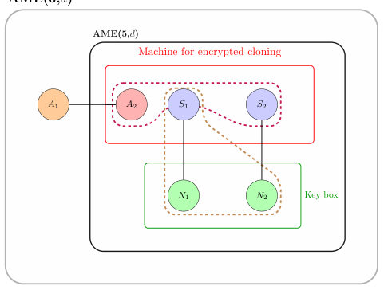
Summary. This paper generalizes the qubit-based encrypted cloning protocol to arbitrary dimensions using Weyl-Heisenberg operators. It proves that this protocol is fundamentally linked to the construction of five-party AME states and threshold quantum secret sharing schemes. The results show that the protocol is robust against the loss of certain noise keys, provided appropriate replacements are used.
Why it may be interesting. This work provides a deep algebraic connection between quantum communication protocols (cloning and secret sharing) and the fundamental structure of multipartite entanglement (AME states), which is highly relevant to quantum error correction and distributed quantum computing.
Main problem. The paper aims to generalize the 'encrypted cloning' protocol from qubits to arbitrary dimensions (qudits) and formally establish its relationship with Quantum Secret Sharing (QSS) and Absolutely Maximally Entangled (AME) states.
Main result. The authors prove that an encrypted qudit system with two signal-noise pairs is equivalent to a five-party AME state and demonstrate that encrypted cloning is a specific instance of a threshold QSS scheme.
Method. The authors use a framework based on Weyl-Heisenberg displacement operators and the Choi-Jamiolkowski isomorphism to analytically derive the encrypted state and verify its entanglement properties.
Model / system. A multipartite quantum system consisting of an input target qudit, $n$ pairs of maximally entangled signal-noise qudits, and a global encryption unitary based on generalized Pauli operators.
Key observables. Reduced density matrices of various subsystems (to check for maximal mixing), Schmidt rank, and the unitarity of the encryption/decryption operators.
Important parameters / regimes. Dimension $d$ of the Hilbert space, number of signal-noise pairs $n$, and the specific quadratic phase factor $\phi(a, b)$ used in the Weyl-Heisenberg construction.
Assumptions / limitations. The equivalence to AME states holds provided the input state is uniform; the protocol assumes access to the noise qudits as decryption keys.
Figures summary. Figure 1 provides a schematic of the $n=2, d=2$ partial encrypted cloning protocol, illustrating the roles of the 'Key box' (noise qubits) and the 'Machine' (signal and auxiliary qubits) in a threshold QSS scheme.
Paper structure. The paper begins by introducing the problem of generalization, develops a Weyl-Heisenberg framework for arbitrary dimensions, proves the AME correspondence for $n=2$, establishes the formal link to QSS, and concludes with error/loss analysis and limitations.
The no-cloning theorem prohibits the creation of identical copies of quantum information, imposing fundamental constraints on quantum technologies. A recently proposed protocol, encrypted cloning, introduced by Yamaguchi and Kempf, showed that perfect qubit clones can be produced if they are simultaneously encrypted with a single-use key. They also observed a connection between this scheme and quantum secret sharing (QSS). However, it remained an open question whether encrypted cloning could be generalised to arbitrary dimensions, and the broader relationship between the two schemes had not been formally established. In this work, we address both questions by framing encrypted clones as Absolutely Maximally Entangled (AME) states. In parallel with recent work by Ceará that utilises Zadoff-Chu sequences, we independently develop a complementary framework for arbitrary dimensions based on Weyl-Heisenberg displacement operators, both tracing back to the original qubit construction by Yamaguchi and Kempf. We analytically compute the encrypted state and prove that an encrypted qudit system comprising two signal-noise qudit pairs is equivalent to a five-party AME state in any dimension, provided the input state is uniform. We then formalise the connection to QSS by proving that a threshold QSS scheme can achieve the fundamental objectives of encrypted cloning, establishing QSS as the natural general framework within which encrypted cloning can be contextualised.
Authors: Indu Bala, Swapan Rana
Type: theory · Category: quantum information and computing · PDF: https://arxiv.org/pdf/2605.26920v1
Analysis basis: full PDF text, analyzed in chunks
Topic relevance: 🔥 entanglement & information structure 4/5
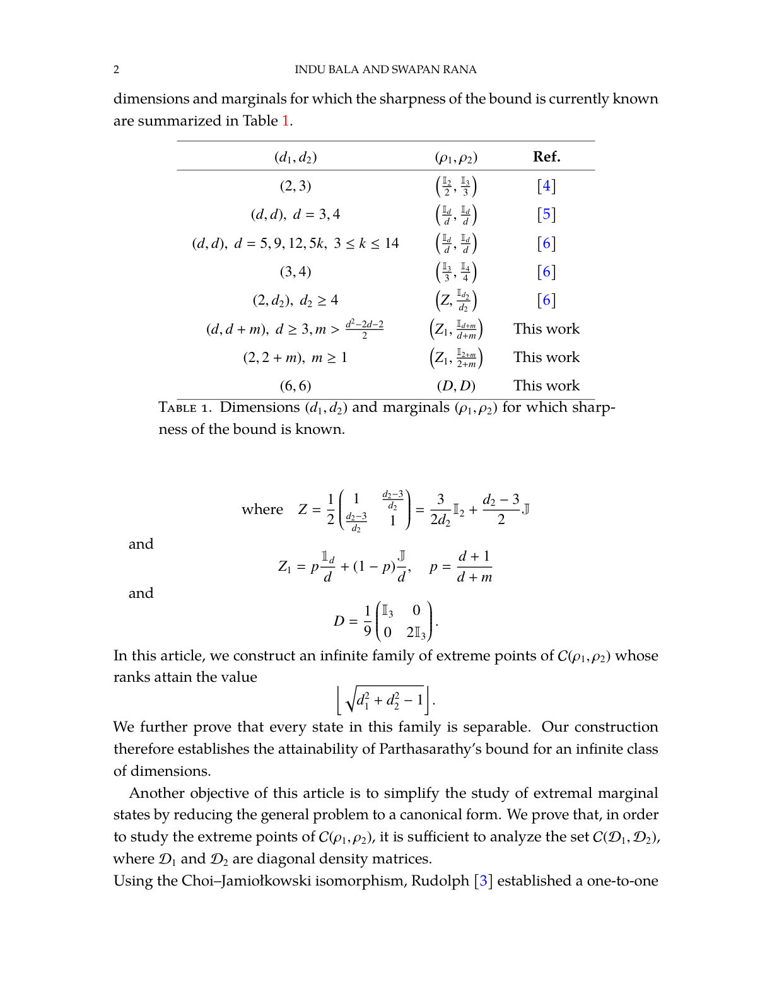
Summary. This paper addresses the long-standing problem of finding the maximum possible rank for extreme points in the set of bipartite quantum states with fixed marginals. The authors successfully construct a large family of such states that reach the theoretical maximum rank. Their findings show that these high-rank extremal states are not rare but are actually the typical case for most dimensions.
Why it may be interesting. This work is highly relevant to researchers in open quantum systems and quantum information as it provides fundamental bounds on the structure of quantum states with fixed marginals, which is a core problem in understanding the geometry of quantum channels and entanglement.
Main problem. The paper investigates the extreme points of the convex set of bipartite quantum states with fixed marginal density matrices, specifically focusing on determining the maximal possible Choi rank of these extreme points.
Main result. The authors construct an infinite family of extreme points in (d, d+m) dimensions with maximal rank (rank d+m) for specific ranges of d and m, and prove that the maximal rank is achieved almost all the time for a given d1.
Method. The study uses the Choi-Jamiołkowski isomorphism to map the problem to completely positive maps, employs tensor product constructions to extend low-dimensional results, and utilizes matrix vectorization to verify linear independence for extremality.
Model / system. The system consists of bipartite quantum states in a Hilbert space H1 ⊗ H2 with dimensions d1 and d2, where the reduced density matrices (marginals) are fixed.
Key observables. Choi rank (rank of the bipartite state), marginal density matrices, and separability/PPT properties.
Important parameters / regimes. Dimensions d and m, specifically the condition m > (d^2 - 2d - 2)/2 for the construction of maximal rank states.
Assumptions / limitations. The construction specifically targets cases where one marginal is a mixture of the identity and a matrix of ones, and certain proofs rely on the use of Hermitian Kraus operators.
Figures summary. Table 1 summarizes known dimensions and marginals where the sharpness of the rank bound has been previously established compared to the new results.
Paper structure. The paper begins by reducing the problem to diagonal marginals, then provides explicit constructions of extreme points using Kraus operators, verifies their extremality via linear independence, generalizes the results using tensor products, and concludes with proofs regarding the PPT property and separability.
We study the extreme points of the convex set $\mathcal{C}(ρ_1,ρ_2)$ of bipartite quantum states with fixed marginals $ρ_1$ and $ρ_2$. We construct extreme points in $(d,\,d+m)$ dimension, of rank $d+m$, matching the highest possible value, for all $d\geq 3$, $m > \frac{d^2-2d-2}{2}$ (when $d=2$, $m\geq 1$). This proves the existence of extremal states with relatively large rank and also covers all the known examples. We further show that, in order to analyze the extreme points of $\mathcal{C}(ρ_1,ρ_2)$, it is sufficient to study the special case $\mathcal{C}(\mathcal{D}_1,\mathcal{D}_2)$, where the marginals are diagonal. Additionally, we observe that it is sufficient to consider $d_1\leq d_2$. Thus, our results show that apart from possibly a few finite cases, for each $d_1$, the maximal rank is achieved almost all times.
Authors: Maximilian F. I. Kieler, Felix Fritzsch, Arnd Bäcker
Type: theory · Category: statistical mechanics · PDF: https://arxiv.org/pdf/2605.27052v1
Analysis basis: full PDF text, analyzed in chunks
Topic relevance: entanglement & information structure 3/5 · non-equilibrium dynamics 3/5 · Keldysh / 2PI / non-Gaussian methods 2/5 · non-equilibrium universality 2/5 · scars & prethermalization 2/5
Summary. This paper provides a semiclassical framework to explain how Random Matrix Theory universality emerges in many-body quantum circuits. By using periodic orbit theory, the authors show that interactions break individual subsystem symmetries to create a global synchronized state. They further prove that the characteristic RMT spectral signatures are robust even when classical correlations decay slowly.
Why it may be interesting. It provides a fundamental semiclassical derivation for how local subsystem dynamics synchronize to produce global RMT behavior, which is central to understanding many-body chaos and thermalization.
Main problem. Establishing a semiclassical foundation for the emergence of Random Matrix Theory (RMT) universality in many-body systems with explicit subsystem structures.
Main result. The authors demonstrate that RMT universality arises from the collective synchronization of periodic orbit correlations, where interaction breaks subsystem time-translation symmetry into global synchronous time translations.
Method. Periodic orbit theory using Gutzwiller's trace formula, stationary phase approximation, and a mapping of the Spectral Form Factor to a statistical mechanics Potts model.
Model / system. L-partite chaotic quantum maps representing many-body systems with interacting subsystems, where the semiclassical limit is defined by h-bar approaching zero.
Key observables. Spectral Form Factor (SFF), K(T)
Important parameters / regimes. Heisenberg time (T_H), subsystem Heisenberg time, interaction strength (epsilon), scaling parameter (Lambda), and the semiclassical parameter (h-bar).
Assumptions / limitations. Hyperbolicity of the classical maps, instantaneous or subexponential decay of classical correlations, and the existence of a well-defined semiclassical limit.
Figures summary. Figure 1 displays the 'bump-ramp' structure of the Spectral Form Factor in a double-logarithmic scale, comparing calculated values against RMT limiting cases.
Paper structure. The paper introduces the problem of many-body universality, develops a periodic orbit theory for L-partite systems, maps the spectral correlations to a Potts model via a Central Limit Theorem, and proves the robustness of the RMT ramp under subexponential correlation decay.
The fundamental correspondence between quantum chaotic single-particle systems and random matrix theory is well-understood via periodic orbit theory. In contrast, we show that many-body systems with explicit subsystem structure possess characteristics different from the single-particle theory. We present a periodic orbit theory for many-body systems with well defined semiclassical limit. For this we identify periodic orbit families arising exclusively in the many-body setting and implement a central limit theorem characterizing their correlations. Based on this we demonstrate that spectral correlations in chaotic quantum circuits are characterized by the breaking of individual time translation invariance of periodic orbits in the subsystems into residual synchronous time translations only. This provides a systematic approach to confirming random matrix universality in deterministic many-body systems.
Authors: Alfred Li, Daisuke Miki, Yanbei Chen
Type: theory · Category: quantum information and computing · PDF: https://arxiv.org/pdf/2605.26215v1
Analysis basis: full PDF text, analyzed in chunks
Topic relevance: entanglement & information structure 3/5 · quantum measurements 3/5 · correlated / nonlocal dissipation 2/5 · methods for driven-dissipative 2/5 · non-equilibrium dynamics 2/5
Summary. This paper establishes a universal bound that prevents entanglement from being generated if thermal noise exceeds a specific threshold relative to the interaction strength. Crucially, it proves that this threshold cannot be bypassed by using mediators, changing initial states, or increasing the number of modes. This provides a fundamental limitation for quantum sensing and entanglement-based protocols in thermal environments.
Why it may be interesting. It establishes a fundamental, unrelaxable limit on entanglement generation in noisy environments, which is critical for researchers designing gravity-induced entanglement experiments or any open-system quantum protocols.
Main problem. Determining whether various protocols, such as using mediators or changing initial states, can relax the fundamental threshold for entanglement generation in multi-mode Gaussian systems subject to thermal noise.
Main result. The authors derive a universal, state-independent bound for entanglement generation: for rank-1 interactions, separability is preserved if the product of thermal noise power spectra exceeds the square of the coupling strength ($S_{th,A} S_{th,B} \geq K_g^2$).
Method. The study uses the Gorini-Kossakowski-Sudarshan-Lindblad (GKSL) formalism, covariance matrix evolution via Langevin equations, and the construction of LOCC protocols using Gaussian weak measurements and feedback.
Model / system. General multi-mode Gaussian (and some non-Gaussian) systems subject to bilinear interactions and white thermal noise, with a specific application to gravity-induced entanglement between two masses.
Key observables. Covariance matrix, entanglement (via PPT criterion), and thermal noise power spectra.
Important parameters / regimes. Gravitational coupling strength (Kg), thermal noise spectra (Sth), mechanical dissipation rate (gamma), and temperature (T).
Assumptions / limitations. The analysis assumes white thermal noise (delta-correlated in time), the Born-Markov approximation, and works in a perturbative regime where damping/friction effects are neglected.
Figures summary. Figure 1 shows the configuration of rank-1 coupled oscillators; Figure 2 illustrates general bilinear coupling with gravity and system-bath links; Figure 3 visualizes a tripartite system with a massive mediator.
Paper structure. The paper begins by defining the problem of entanglement thresholds, moves to deriving the universal bound for rank-1 and general bilinear interactions using covariance matrices, extends the result to correlated noise, proves the robustness against non-Gaussianity and mediators, and concludes by constructing LOCC protocols that reproduce the target dynamics.
We derive a universal condition for entanglement generation under general bilinear interactions in the presence of white thermal noise. While various protocols have been proposed to enhance the amount of generated entanglement, it remains unclear whether they can also relax the threshold for entanglement generation itself. Using a Gorini-Kossakowski-Sudarshan-Lindblad description, we analyze general multimode systems and derive a separability-preserving condition for bilinear interactions under white thermal noise. As an application to gravity-induced entanglement, we show that the gravitational interaction must dominate over thermal noise for entanglement to arise. In particular, this bound cannot be relaxed by changing the initial state or by introducing mediator systems, although such ingredients may enhance the amount of entanglement once it is generated. These results establish a general limitation on entanglement-generation protocols in thermal environments.
Authors: Yuguan Li, D. C. Liu, Murray T. Batchelor
Type: theory · Category: statistical mechanics · PDF: https://arxiv.org/pdf/2605.26813v1
Analysis basis: full PDF text, analyzed in chunks
Topic relevance: driven-dissipative phase transition 3/5 · entanglement & information structure 2/5 · methods for driven-dissipative 2/5 · non-equilibrium dynamics 2/5 · non-equilibrium universality 2/5
Summary. This paper provides an exact analytical solution for the non-Hermitian XY spin chain, specifically detailing the behavior of the system at Exceptional Points. It demonstrates how the energy spectrum and eigenstates undergo permutation when encircling these points in the complex parameter plane. The work establishes a robust framework for studying non-Hermitian topology using a real-space, many-body approach.
Why it may be interesting. It provides an analytically controlled many-body platform for studying non-Hermitian topology and the physics of Exceptional Points in real space, which is highly relevant to open quantum systems and many-body dynamics.
Main problem. The paper seeks to find an exact solution for the non-Hermitian XY spin chain with open boundary conditions, specifically addressing the algebraic structure and eigenvector construction at Exceptional Points (EPs).
Main result. The authors derive a complete analytical solution including the Jordan normal form at EPs, demonstrating that EPs act as branch points that cause the permutation of eigenenergies and eigenstates upon encirclement.
Method. The study employs a quasi-Hamiltonian analysis using Chebyshev polynomials to represent eigenvectors and a Jordan normal form approach to handle the defective nature of the Hamiltonian at EPs.
Model / system. A non-Hermitian XY spin chain with open boundary conditions, where the anisotropy parameter gamma is extended to complex values, mapped to a quadratic spinless-fermion problem via Jordan-Wigner transformation.
Key observables. Quasi-energy spectrum, many-body energy spectrum, biorthogonal overlap (langle L|R rangle), and the branch-cut structure of eigenstates.
Important parameters / regimes. Complex anisotropy parameter gamma, system size L, and quasi-energy epsilon.
Assumptions / limitations. The study focuses on open boundary conditions; the Hamiltonian is assumed to be complex-symmetric, allowing the left eigenvector to be the transpose of the right eigenvector.
Figures summary. Figure 1 and 2 show the magnitude and cusp structure of the biorthogonal overlap in the complex gamma plane; Figure 3 and 4 visualize the branch-cut structure and Riemann surface of the overlap.
Paper structure. The paper introduces the non-Hermitian XY model, develops a Chebyshev-polynomial representation for eigenvectors, analyzes the system away from and at Exceptional Points using Jordan normal forms, and concludes with a topological analysis of the complex parameter plane.
We consider the non-Hermitian XY spin chain with open boundary conditions when the anisotropy parameter is extended to complex values. By analyzing the quasi-Hamiltonian matrix, we demonstrate that the free-fermion structure of the quasi-energy spectrum coincides with that of the Hermitian model and construct the corresponding biorthogonal fermionic basis away from exceptional points (EPs). We make use of an explicit Chebyshev-polynomial representation of the open-boundary eigenvectors in which the quasi-energy $\varepsilon$ is the natural spectral variable. This quasi-energy polynomial form is particularly useful at EPs, because EPs correspond to repeated roots of the same boundary polynomial, making the construction of generalized eigenvectors by $\varepsilon$-differentiation transparent. At EPs, where the quasi-Hamiltonian becomes defective, we derive the Jordan normal form and construct the associated generalized eigenvectors, which yields the correct counting of independent many-body eigenstates. We further show that EPs act as branch points in the complex anisotropy plane, leading to the characteristic permutation of eigenenergies and eigenstates upon encirclement. The branch-cut structure of the biorthogonal eigenstates provides direct evidence for the exchange of eigenstates when an EP is encircled. These results provide an analytically controlled many-body platform for studying EP physics and non-Hermitian topology beyond momentum-space descriptions.
Authors: Sascha Gehrmann
Type: theory · Category: statistical mechanics · PDF: https://arxiv.org/pdf/2605.26205v1
Analysis basis: full PDF text, analyzed in chunks
Topic relevance: entanglement & information structure 3/5 · non-equilibrium dynamics 3/5 · scars & prethermalization 3/5 · methods for driven-dissipative 2/5
Summary. This paper provides a unified algebraic framework to show that exact edge-localized operators (ESZMs) are a generic feature of many integrable spin models with large anisotropy. By linking these modes to the periodicity of R-matrices and the tracelessness of K-matrices, the work predicts new models with protected edge coherence. This discovery moves beyond model-specific constructions to a universal principle for edge protection in integrable systems.
Why it may be interesting. This is highly relevant for many-body dynamics as it identifies a universal mechanism for achieving anomalously long edge coherence times through exact symmetry-protected operators.
Main problem. The lack of a unified, model-independent framework to understand the existence and localization of Exact Strong Zero Modes (ESZMs) in integrable spin systems.
Main result. The paper demonstrates that ESZMs are a generic feature of a broad family of integrable spin models with large anisotropy, arising from the quasi-periodicity of the R-matrix and the tracelessness of the K-matrix.
Method. The author utilizes the Quantum Inverse Scattering Method (QISM), transfer-matrix formalism, and Matrix Product Operator (MPO) techniques to analyze the algebraic properties of R- and K-matrices.
Model / system. A broad class of integrable spin models with large anisotropy and open boundary conditions, including the XXZ chain, Izergin-Korepin (IK) chain, and models associated with Lie algebra series A, B, C, and D.
Key observables. Strong Zero Modes (SZMs), Exact Strong Zero Modes (ESZMs), Hilbert-Schmidt norms of operator components, and the infinite-temperature autocorrelation function.
Important parameters / regimes. Anisotropy parameter (Delta), deformation parameter (q), crossing parameter (rho), and system size (L).
Assumptions / limitations. The mechanism is primarily applicable to integrable models and assumes specific trigonometric solutions of the Yang-Baxter equation.
Figures summary. Figure 1 shows the exponential decay of Hilbert-Schmidt norms for different algebra series; Figure 2 shows the saturation of the autocorrelation function in the IK chain, signaling edge coherence.
Paper structure. The paper defines SZMs/ESZMs, reviews the QISM framework, establishes the general construction based on R-matrix periodicity, provides specific boundary condition solutions for various Lie algebras, and verifies results via numerical simulations.
Strong zero modes (SZMs) are edge-localized operators that commute with the Hamiltonian up to corrections exponentially small in system size, yielding anomalously long edge coherence times. In some settings, notably certain integrable models, this commutator can be made to vanish exactly at finite size, defining an exact SZM (ESZM). Existing ESZM constructions in the integrable setting, however, have proceeded model by model and have not been unified into a common framework. Here, I show that ESZMs arise generically in a broad family of integrable spin models with anisotropic interactions. Their existence follows from two algebraic properties of the underlying R- and K-matrices -- quasi-periodicity in the spectral parameter and tracelessness, respectively -- providing a uniform, model-independent mechanism. The framework recovers the known ESZM in XXZ chain and its higher-spin generalizations as special cases and predicts ESZMs in previously unrecognized models.
Authors: Changmin Ahn, Hansol Jeong, Seoyeon Yang, Junyong Choi, Igju Jeon, Hanseb Moon, Jungwon Kim
Type: experiment · Category: other · PDF: https://arxiv.org/pdf/2605.26427v1
Analysis basis: full PDF text, analyzed in chunks
Topic relevance: interference shaping light 3/5 · quantum optics experiment 3/5 · QC/QI experiment 2/5 · quantum measurements 2/5
Summary. The researchers developed a hybrid laser stabilization technique that combines a long-fiber interferometer with an atomic reference. This approach achieves both Hz-level linewidth and long-term frequency stability, providing a path toward compact, field-deployable lasers for quantum technologies.
Why it may be interesting. This work is highly relevant for quantum optics and precision metrology as it provides a scalable method to create the ultra-stable, narrow-linewidth light sources required for controlling atoms, driving quantum gates, and performing high-precision sensing.
Main problem. The difficulty of achieving lasers that simultaneously possess ultra-narrow linewidths (short-term spectral purity) and absolute frequency stability (long-term frequency anchoring) without the trade-off between noise and drift.
Main result. The development of a hybrid architecture that achieves a 3.4-Hz linewidth and high long-term stability, with a minimum fractional frequency stability of 3.4x10^-14 at 0.56 s.
Method. A dual-stabilization scheme where an external-cavity diode laser is first stabilized to a 1-km fiber interferometer for spectral purification and subsequently anchored to an 87Rb D2 transition via modulation transfer spectroscopy to suppress drift.
Model / system. An experimental platform consisting of a 1560.4-nm external-cavity diode laser, a 1-km homodyne Michelson fiber interferometer, and an 87Rb D2 transition-based modulation transfer spectroscopy (MTS) system.
Key observables. Laser linewidth (1-rad integrated-phase method), frequency noise Power Spectral Density (PSD), Allan deviation (fractional frequency stability), and RMS frequency drift.
Important parameters / regimes. 3.4-Hz linewidth, 1-km fiber delay, 156/60.4-nm laser wavelength, 87Rb D2 transition, 5-Hz low-pass filter cutoff, and 3.4x10^-14 minimum fractional frequency stability.
Figures summary. Figure 1 illustrates the concept of hierarchical stabilization; Figure 2 shows the MTS setup and comparison of SAS vs MTS signals; Figure 3 details the experimental implementation of the dual-branch architecture; Figure 4 presents comprehensive performance metrics including PSD, drift, and stability comparisons.
Paper structure. The paper introduces the problem of the stability-linewidth trade-off, describes the hierarchical dual-stabilization architecture, details the experimental setup for both the interferometric and atomic branches, presents performance characterization (linewidth, noise, and drift), and concludes with a comparison to existing literature.
Narrow-linewidth lasers with absolute frequency anchoring are essential for precision metrology, coherent sensing, and emerging quantum technologies beyond laboratory environments. Optical cavities and interferometers provide exceptional short-term spectral purity but lack intrinsic absolute frequency references. Atomic transitions, in contrast, provide stable frequency anchors but offer limited discrimination sensitivity. Recent hybrid approaches have demonstrated the combination of compact optical resonators with atomic references, yet achieving the Hz-level regime remains challenging. Here, we present a hybrid architecture that enables simultaneous realization of Hz-level linewidth and atomic-referenced frequency stability. An external-cavity diode laser is first stabilized to a fiber interferometer to achieve Hz-level spectral purity, while the interferometer is subsequently anchored to an 87Rb D2 transition via modulation transfer spectroscopy to suppress long-term drift and define the laser frequency relative to the atomic transition. This dual-stabilization scheme realizes a compact atomic-referenced laser with a 3.4-Hz linewidth (1-rad integrated-phase method), a minimum fractional frequency stability of 3.4x10-14 at 0.56 s, and 9x10-13 at 100 s. This architecture establishes a practical and scalable route toward compact and field-deployable atomic-referenced narrow-linewidth lasers for precision metrology and quantum technologies.
Authors: Simon Wili, Meng-Zi Huang, Tommaso Bonaccorsi, Michael Mühlematter, Mohsen Talebi, Yaakov Yudkin, Alex Gómez-Salvador, Filip Marijanovic, Eugene Demler, Tilman Esslinger
Type: experiment · Category: quantum gases · PDF: https://arxiv.org/pdf/2605.27356v1
Analysis basis: full PDF text, analyzed in chunks
Topic relevance: analog quantum simulation 3/5 · non-equilibrium dynamics 3/5 · correlated / nonlocal dissipation 2/5 · driven-dissipative phase transition 2/5
Summary. The researchers used ultracold Fermi gases to observe a paradox where increasing the width of a superfluid channel actually increases resistance during the transition from 1D to 2D. They demonstrate that this occurs because the system moves from a regime of phase slips to one of vortex motion, with a minimum in dissipation occurring where both are suppressed. This work provides a benchmark for understanding dimensional crossovers in both quantum gases and superconductors.
Why it may be interesting. It provides a clean, tunable platform to study the fundamental transition between different topological dissipation mechanisms (phase slips vs. vortices) without the confounding effects of disorder found in solid-state systems.
Main problem. Understanding how resistance and dissipation evolve during the dimensional crossover from 1D to 2D in low-dimensional superfluids.
Main result. Discovery of a 'quantum resistance paradox' where widening the transport channel increases resistance in the 1D-to-2D crossover, caused by a transition between phase-slip and vortex-driven dissipation.
Method. Using a defect-free, programmable transport geometry of ultracold Fermi gases to measure atom-pair imbalance relaxation and underdamped oscillations.
Model / system. A transport system of two superfluid reservoirs of a unitary Fermi gas of 6Li atoms connected by a programmable channel of varying width, modeled as a Topological Nonlinear Resistor-Inductor-Capacitor (TNRLC) circuit.
Key observables. Atom-pair imbalance (delta N/N), atom transport traces, oscillation frequency, oscillation amplitude, and current (I).
Important parameters / regimes. Channel width (w), temperature (T/TF), coherence length (xi), and the 1D-to-2D crossover regime.
Assumptions / limitations. The gas is in the unitary limit and local thermodynamic equilibrium; compressibility and temperature are assumed identical for both hyperfine states.
Figures summary. Figure 1 shows the experimental setup and dissipation mechanisms; Figure 2 illustrates the breakdown of scaling laws (LAMH and vortex models) in the crossover regime; Figure I shows inductance scaling with channel width.
Paper structure. Introduction of the resistance paradox and dimensional crossover; description of the experimental platform using 6Li atoms; presentation of the TNRLC circuit model; analysis of the 1D phase-slip regime; analysis of the 2D vortex regime; discussion of the crossover and the resistance minimum; conclusion on implications for superconducting devices.
Resistance in standard conductors decreases with increasing cross-section. Yet, in low-dimensional superconductors and superfluids residual resistance arises from topological fluctuations of the order parameter manifesting as phase slips in one-dimensional (1D) and vortices in two-dimensional (2D) systems. How resistance and dissipation evolve as geometry interpolates between these regimes remains an open question. This evolution is masked in solid-state experiments by disorder, impurities, and geometric imperfections, and poses theoretical challenges due to competing dissipative processes and pronounced finite-size effects. Here, we use a defect-free unitary Fermi gas in a digitally programmable transport geometry to isolate geometric effects on superfluid dissipation and discover a paradox: in the crossover from 1D to 2D, the resistance reaches a minimum. There, widening a channel increases its resistance. Narrower, quasi-1D channels show dissipation described by Langer-Ambegaokar-McCumber-Halperin theory of phase slips. In this regime, varying the channel width yields the predicted exponential scaling of the activation factor over more than ten orders of magnitude. Wider, quasi-2D channels show dissipation consistent with a finite-size vortex model. The minimal dissipation in the dimensional crossover reflects a transition in the dominant dissipative mechanism, with both phase slips and vortices simultaneously suppressed. Our measurements suggest a route to minimizing dissipation in superconducting devices and provide a benchmark for theoretical efforts aimed at describing the dimensional crossover.
← Index · ← Previous · Next →